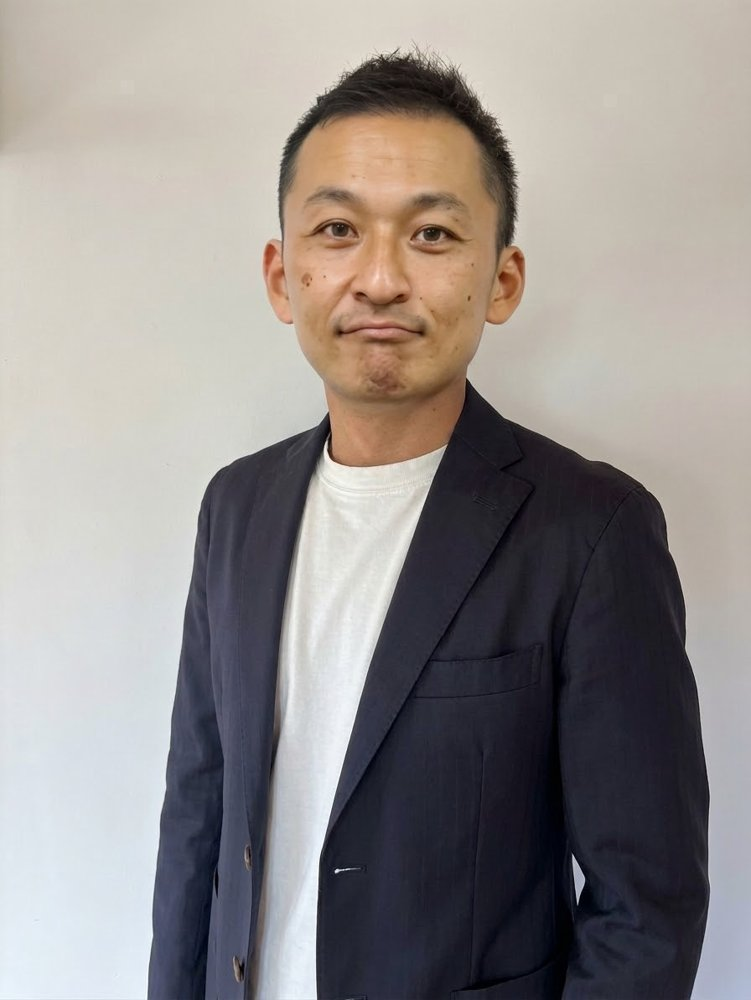
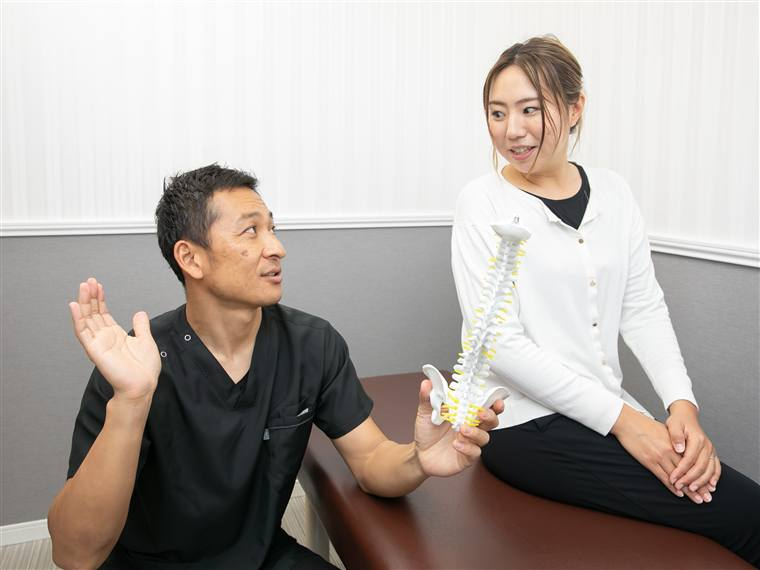
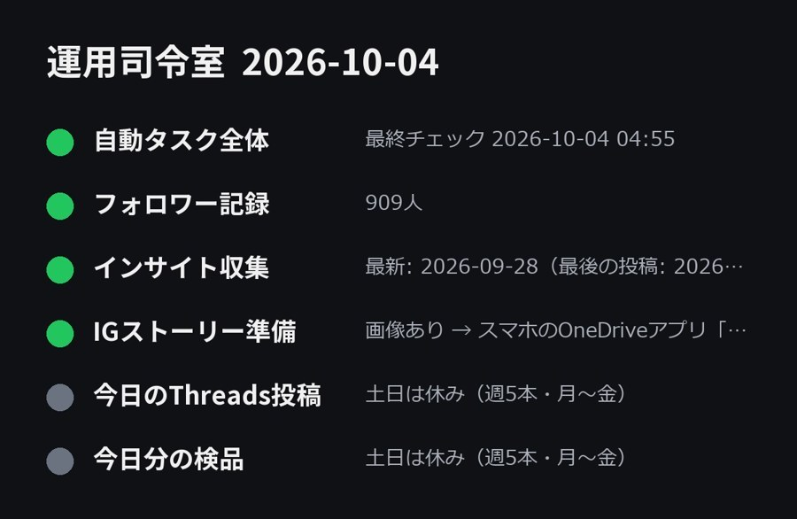
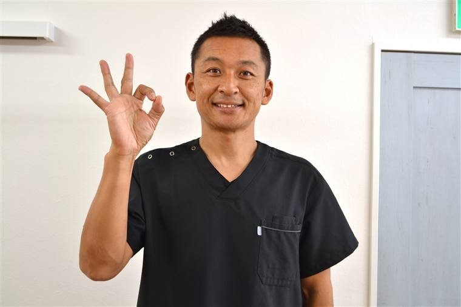

院長の時間を、
1日2時間つくる。
予約は埋まっている。売上もある。それでも、自分にしかできない仕事で毎日が埋まっている。そんな院長・オーナーのための仕事をしています。

自費の整体院を14年、いまも現役で経営している
合同会社UP LINK 成相 裕康
60分・Zoom・無料。売り込みはしません
なぜ僕が
僕も、現役の院長です

辻堂で整骨院を開業し、保険診療から自費の美容整体院へ転換して、14年目の今も現役で施術に立っています。
- 自費の院を14年。単価35,000円・週休3日
- 10年連続で月商300万円以上（最高月商は800万円）
- 事務作業を月40時間減らし、この夏は10連休（売上は保てました）
- この1年で、月商100万円以下から月商300万円に届いた院が2件（お名前は伏せています）
パソコンが苦手と言われていた僕が、請求書・SNS・LINE・記録を仕組みに渡して、ここまで来ました。すべて、自分で試してから人にお渡ししています。
やり方
やり方は3つあります
- 業務の棚卸し。院長の一日を書き出して、「やめていい仕事」と「渡していい仕事」を分けます。実は、やめていい仕事がけっこう混ざっています。
- 仕組みで肩代わりする。SNSの投稿、お客様へのご案内、書類づくり。ここはAIに渡します。設定は全部こちらでやります。僕はもともとパソコンが苦手で、それでも自分の院で毎日回っています。
- 手放せない理由を外す。仕組みを入れても動かない院長が、必ずいます。技術ではなく、決めきれない・手放せないが原因のことが多い。僕はコーチングの資格（Soleado プロコーチ）を持っています。ここは対話で一緒に外します。
売っているのは「AI」ではなく、院長の時間です。棚卸しで済むこともあれば、対話のほうが早いこともあります。手段は決め打ちにしません。
こんな院長・オーナーへ
こんな毎日になっていませんか
- 朝から晩まで施術に立ち続けて、気づけば一日が終わっている
- 予約は埋まっているのに、経営のことを考える時間がひとつもない
- 施術が終わってから、記録や請求などの事務をしている
- SNS・ブログ・Googleマップ。やらなきゃと思ったまま、何週間も止まっている
- 予約や問い合わせの電話に、施術の合間に自分で出ている
- 任せようとしたけれど、結局「自分がやった方が早い」に戻った
どれも「やらないと回らない。でも、院長がやらなくてもいい」仕事です。ここが院長の予定表に入ったままだと、時間は戻ってきません。
浮いた時間で
今年の夏は、家族と10連休
売上も保てました。特別なことをしたわけではありません。やらなくていい仕事を、仕組みに渡しただけです。


実際に動いている仕組み
これから勉強する人ではなく、毎日回している人です
自分の院で、SNSの投稿は企画から執筆・検品・投稿まで毎日自動で動いています。お客様のLINE対応も、仕組みが受けています。教科書で読んだ話ではなく、今この瞬間も動いている自分の仕組みを、そのままお渡しします。


無料の棚卸しセッションでも、実際に動いている画面をお見せします。想像で判断していただく必要はありません。
例えば
例えばこんな仕事を渡せます
- 問い合わせ・予約のLINEでの一次対応
- カウンセリング・説明の録音を文字起こしして、要点と次にやることをまとめる
- Googleビジネスプロフィール・SNSの原稿づくり（院長は確認するだけ）
- 請求書やメールの下書きなどの事務
向いている院長・まだ早い院長
こんな院長・オーナーに向いています
向いている
- 自費中心で、売上は伸びている
- 予約は埋まっているのに、経営を考える時間がない
- スタッフや外注に任せようとして、結局自分に戻ってきた経験がある
- パソコンは苦手。でも、時間が戻るなら覚える気はある
まだ早い
- まず売上を上げたい段階（時間より先に、集客の設計が要ります）
- 自分でやるのが好きで、手放したいとは思っていない
「うちはまだ早い」も、立派な答えです。棚卸しセッションでそうお伝えすることもあります。
よくある質問
よくある質問
パソコンが苦手なのですが、大丈夫ですか？
大丈夫です。僕自身が「パソコンが苦手といえば僕」と言われていました。設定は全部こちらで行い、使える状態にしてお渡しします。
忙しくて、そもそも取り組む時間がありません。
だからこそ最初の一手は「増やす」ではなく「減らす」です。棚卸しセッションで、いま一番時間を取られている仕事を特定して、それを離すところから始めます。
スタッフに任せようとして、うまくいきませんでした。
人に渡すのと、仕組みに渡すのは別です。人に渡してうまくいかなかった仕事ほど、仕組みに向いていることがあります。
情報が漏れたりしませんか？
何をAIに渡してよいか、渡してはいけないかを最初に整理してから進めます。お客様の個人情報は渡しません。
無料の棚卸しセッションの後、しつこく勧誘されますか？
しません。契約を迫ることは一切ありません。「うちには要らない」も立派な答えです。
どこから受けられますか？
Zoomで全国どこからでも受けられます。
まずは
無料の棚卸しセッション（60分・Zoom）

院長の1週間を伺って、いま何に時間を取られているかを一緒に書き出します。最初に手をつける1つを、その場でお見せします。
無料の棚卸しセッションを予約するZoom60分・売り込みはしません
「うちはまだ早い」とお伝えすることもあります